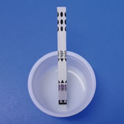
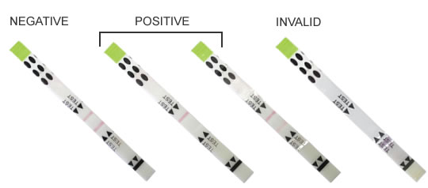
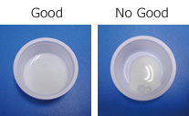

Tetracycline antibiotics test in MilkÅyMILK DOCTOR TETRAÅz
MDT TETRACYCLINE TEST KIT
MDT Test is specifically designed for commonly used Tetracycline antibiotics in bovine milk. User can use easily for purpose of screening test before milk is collected by truck because of simple procedure.
- User Friendly Unnecessary to extract samples,One step procedure
- High Sensitivity Å° TC 20ppb
Å° OTC 20ppb
Å° CTC 100ppb
- Fastness 5 minutes to get result
- EYES INTERPRETATION Easy to get result by color intensity
Simple procedure and get the result in 5 minutes
Åú With 1 steps procedure, easy to use for the purpose to check drug residue in balk at farmer side too.
Åú The result in 5 minutes and easy to get result by eyes interpretation
- STEP 1
- STEP 2
- STEP 3 
- Result 

ake the milk sample with a Dropper up to the level of the indicated line, and dispense all amount of the milk into the plastic Cup.
Do this operation Twice.

Jiggle the Plastic Cup lightly to spread the sample on the bottom surface of plastic cup
Soak the Dipping part of Test Strip in the milk sample of the plastic Cup.
* Do not place the strip vertically

Specification
- Product name:
- Milkdoctor Tetra
- Code No.
- MDT-50
- Composition:
- Test stripÅ@50 piecesinstruction
- Sample cupÅ@50 cupsProcedure manual
- Disposable pipetteÅ@50 pieces
- intended use:
- qualitative test to detect Beta-Lactams antibiotics in bovine milk for screening
- Measurement Principle:
- Competitive immunoassay
- Sensitivity:
- TetracyclineÅ@20ppbChlortetracycline 100ppb
- Oxytetracycline 20ppb
- Time needed:
- 5 minutes (under condition at room temperature)
- Storage condition:
- Room temperature Åi2ÅéÅ`30ÅéÅj, (In the case of over 30Åé, recommended refrigeration storage)
- Not provided, but materials required:
- Clean container for collecting raw milk, Clock or Timer Incubator (In the case of usage at low temperature environment)
Note: MDT is screening and self-monitoring test purpose only.
Final decision should be made by officially approved confirmatory test.
FAQ
- Test line does not appear.Milk samples does not absorb to teststrip or does not wet the surface of teststrip
Dipping part of teststrip does not soak to milk sample.Please use new teststrip and confirm the strip to soak to milk sample completely
Volume of milk sample does not enough for testing. Volume of milk sample is necessary to take twice until the indicate line of dropper.
Å°In the case of milk sample is high viscosity or over the 25 microns of fat particle size, test strip may block the absorption. When testing, milk of balk tank after taking should be shaken off slightly and please use the milk sample which particle size is uniformly.
Å°Milk sample is acid pH level (5.0).
Å°Test performance is under 20Åé. Recommendation of environment temperature is over 20Åé.
Å°Teststrip gets wet. Please handle the teststrip by dried hand.
- Confirmed 2lines, but difficult to judge or to compare the color intensity.
Volume of milk sample does not enough for testing. Volume of milk sample is necessary to take twice until the indicate line of dropper.
Å°Test performance is under 20Åé. Recommendation of environment temperature is over 25Åé
Å°Some kinds of milk sample is effective on speed of absorption to teststrip. If the absorption to milk sample is slowly, extend more 5 minutes of the dipping time. Teststrip is possible to dip to milk sample until 30 minutes.
- The color intensity of line is asymmetric or some part of line does not colored.
It is no problem if the color of center in line is weak and continue judgment by other parts in the line.
Å°Volume of milk sample does not enough for testing. Volume of milk sample is necessary to take twice until the indicate line of dropper.
Å°The composition of milk sample such as large size of fat particle may effective on absorption to teststrip and it happens spotty at line. Judge by either left or right part in the line or use new strip.
Å°Teststrip gets wet. Please handle the teststrip by dried hand.
Å°Test performance is under 20Åé. Recommendation of environment temperature is over 20Åé.
- Is it possible to do testing by the blood or body fluid ?
- No, MDB is designed for detection of bovine milk. Please do not use other samples except raw bovine milk.
- Is it possible to do testing by pasteurized milk or processed milk?
- No, MDB is designed for detection of raw bovine milk. Please do not other samples except raw milk.
- Result is different between MDB and official method.
- MDB is screening test kit and not replacement for official method. Final judgment should be confirmed by official method.
- Film of surface on the strip is peeled. Can I do use the strip?
- No, it may not get exact result. Please use new one.
- Cap of the bottle was loosing or leaving to open. Can I use the teststrip in the bottle?
- Teststrip is effective on absorption of humidity and deteriorate rapidly. Please close the cap tightly after taking the strip from bottle. If leaving to open the cap long time, please do not use teststrip of the bottle.
- Stored the kit in refrigerator and took the teststrip from the bottle which is keeping cold. Cap of the bottle was loosing or leaving to open. Can I use the teststrip in the bottle?
- The kits should be brought to around 20 to 25 ÅãC before stating the test
- Stored the kit under condition of over 30 ÅãC or exposed in outdoor in the summer. Is it possible to use the kit ?
- Please avoid to use the kit which is storage condition of above. Above storage condition caused to deteriorate the product. In addition, please avoid to keep away from direct sunlight.
Contact Us
AR Brown Co., LtdÅ@Hu-Vet dept
VET team
Ginza Mitsui Bldg., 13-1, Ginza 8-chome, Chuo-ku, Tokyo, 104-0061
TEL:+81-3-3545-2881Å@FAX:+81-3-3543-8865